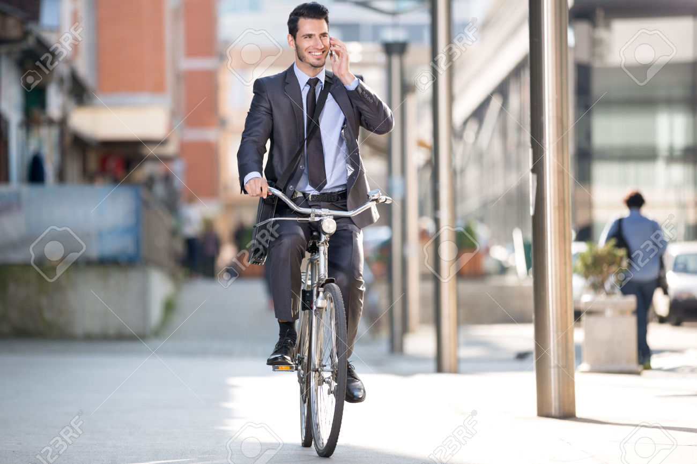
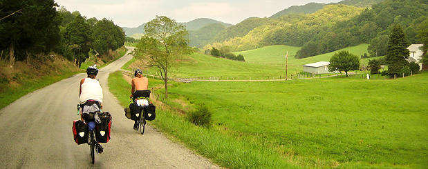

| Summary | Quarter I | Quarter II |
|---|---|---|
| Results | Results | |
| January | 10 | 20 |
| February | 30 | 40 |
| Total | 100 | |
In your drive into work, have you ever noticed a cyclist obviously commuting and admired that person? Have you thought it would be cool to ride your bike to work, or home from the office? Perhaps it's crossed your mind that bike commuting not only helps the environment and saves gas money; but it could help you stay fit, healthy and burn a few extra calories. Despite some worthy reasons to ride your bike to work, there never seems to be a good time to start. So why not start now? Lots of people commute on their bicycles, why not you?
Europe is the birthplace of the Tour de France, the rear derailer, the Dutch utility bike, and the trans-continental bike route. Nevertheless, it can be intimidating to plan your own bike tour there. How do you choose a route? Where do you stay? How much planning do you really need to do? Despite these challenges, planning your own bike tour can reduce costs, allow flexibility for route changes, get you off the beaten path, and make you proud to be self-reliant. And although there isn’t a SAG wagon, you aren’t on a completely unsupported tour: Europe has a well-developed rail network, lots of campgrounds and bike shops, accurate maps, and delicious food in every town. And it is an excellent place to start touring on your own. In the summer of 2012, starting with only a rough outline of our route, my wife and I went on a two-month honeymoon, riding our bikes through Ireland, France, Italy, Switzerland, and Germany. Here are a few of the things that we learned along the way about trip planning, touring, and maintaining matrimonial bliss
